<!DOCTYPE html>
<html>
<head><meta name="generator" content="Hexo 3.8.0">
  <meta charset="utf-8">
  

  
  <title>科普e站设备安装使用操作说明 | Hexo</title>
  <meta name="viewport" content="width=device-width, initial-scale=1, maximum-scale=1">
  <meta name="description" content="返回首页   一、案例 二、    常用竖屏设备安装  三 、    常用竖屏设备开关机 四、    常用横屏无需安装 ,需要卸除两颗螺丝 五、    常用竖屏设备开关机 开关机方法同上！六、科普e站设备开机启动：等待网络连接 开机后系统会自动启动科普e站，当出现以上界面时，请不要关闭此页面20秒之后系统会自动进入科普e站首页。七、科普e站首页 如果网络和系统正常，系统会进入科普e站首页界面（见">
<meta property="og:type" content="article">
<meta property="og:title" content="科普e站设备安装使用操作说明">
<meta property="og:url" content="https://github.com/linuxpy/github.io/2019/01/08/科普e站设备安装使用操作说明/index.html">
<meta property="og:site_name" content="Hexo">
<meta property="og:description" content="返回首页   一、案例 二、    常用竖屏设备安装  三 、    常用竖屏设备开关机 四、    常用横屏无需安装 ,需要卸除两颗螺丝 五、    常用竖屏设备开关机 开关机方法同上！六、科普e站设备开机启动：等待网络连接 开机后系统会自动启动科普e站，当出现以上界面时，请不要关闭此页面20秒之后系统会自动进入科普e站首页。七、科普e站首页 如果网络和系统正常，系统会进入科普e站首页界面（见">
<meta property="og:locale" content="default">
<meta property="og:image" content="https://github.com/linuxpy/github.io/2019/01/08/科普e站设备安装使用操作说明/2.jpg">
<meta property="og:image" content="https://github.com/linuxpy/github.io/2019/01/08/科普e站设备安装使用操作说明/1.jpg">
<meta property="og:image" content="https://github.com/linuxpy/github.io/2019/01/08/科普e站设备安装使用操作说明/3.jpg">
<meta property="og:image" content="https://github.com/linuxpy/github.io/2019/01/08/科普e站设备安装使用操作说明/4.jpg">
<meta property="og:image" content="https://github.com/linuxpy/github.io/2019/01/08/科普e站设备安装使用操作说明/5.jpg">
<meta property="og:image" content="https://github.com/linuxpy/github.io/2019/01/08/科普e站设备安装使用操作说明/ez001.jpg">
<meta property="og:image" content="https://github.com/linuxpy/github.io/2019/01/08/科普e站设备安装使用操作说明/ez002.jpg">
<meta property="og:image" content="https://github.com/linuxpy/github.io/2019/01/08/科普e站设备安装使用操作说明/8.jpg">
<meta property="og:image" content="https://github.com/linuxpy/github.io/2019/01/08/科普e站设备安装使用操作说明/9.jpg">
<meta property="og:image" content="https://github.com/linuxpy/github.io/2019/01/08/科普e站设备安装使用操作说明/10.jpg">
<meta property="og:image" content="https://github.com/linuxpy/github.io/2019/01/08/科普e站设备安装使用操作说明/ez003.jpg">
<meta property="og:image" content="https://github.com/linuxpy/github.io/2019/01/08/科普e站设备安装使用操作说明/12.jpg">
<meta property="og:image" content="https://github.com/linuxpy/github.io/2019/01/08/科普e站设备安装使用操作说明/ez005.jpg">
<meta property="og:image" content="https://github.com/linuxpy/github.io/2019/01/08/科普e站设备安装使用操作说明/14.jpg">
<meta property="og:image" content="https://github.com/linuxpy/github.io/2019/01/08/科普e站设备安装使用操作说明/15.jpg">
<meta property="og:image" content="https://github.com/linuxpy/github.io/2019/01/08/科普e站设备安装使用操作说明/16.jpg">
<meta property="og:image" content="https://github.com/linuxpy/github.io/2019/01/08/科普e站设备安装使用操作说明/17.png">
<meta property="og:image" content="https://github.com/linuxpy/github.io/2019/01/08/科普e站设备安装使用操作说明/17_.png">
<meta property="og:image" content="https://github.com/linuxpy/github.io/2019/01/08/科普e站设备安装使用操作说明/18.jpg">
<meta property="og:image" content="https://github.com/linuxpy/github.io/2019/01/08/科普e站设备安装使用操作说明/19.jpg">
<meta property="og:updated_time" content="2019-01-14T14:46:14.442Z">
<meta name="twitter:card" content="summary">
<meta name="twitter:title" content="科普e站设备安装使用操作说明">
<meta name="twitter:description" content="返回首页   一、案例 二、    常用竖屏设备安装  三 、    常用竖屏设备开关机 四、    常用横屏无需安装 ,需要卸除两颗螺丝 五、    常用竖屏设备开关机 开关机方法同上！六、科普e站设备开机启动：等待网络连接 开机后系统会自动启动科普e站，当出现以上界面时，请不要关闭此页面20秒之后系统会自动进入科普e站首页。七、科普e站首页 如果网络和系统正常，系统会进入科普e站首页界面（见">
<meta name="twitter:image" content="https://github.com/linuxpy/github.io/2019/01/08/科普e站设备安装使用操作说明/2.jpg">
  
    <link rel="alternate" href="/github.io/atom.xml" title="Hexo" type="application/atom+xml">
  
  
    <link rel="icon" href="/favicon.png">
  
  
    <link href="//fonts.googleapis.com/css?family=Source+Code+Pro" rel="stylesheet" type="text/css">
  
  <link rel="stylesheet" href="/github.io/css/style.css">
</head>
</html>
<body>
  <div id="container">
    <div id="wrap">
      <header id="header">
  <div id="banner"></div>
  <div id="header-outer" class="outer">
    <div id="header-title" class="inner">
      <h1 id="logo-wrap">
        <a href="/github.io/" id="logo">Hexo</a>
      </h1>
      
    </div>
    <div id="header-inner" class="inner">
      <nav id="main-nav">
        <a id="main-nav-toggle" class="nav-icon"></a>
        
          <a class="main-nav-link" href="/github.io/">Home</a>
        
          <a class="main-nav-link" href="/github.io/archives">Archives</a>
        
      </nav>
      <nav id="sub-nav">
        
          <a id="nav-rss-link" class="nav-icon" href="/github.io/atom.xml" title="RSS Feed"></a>
        
        <a id="nav-search-btn" class="nav-icon" title="Search"></a>
      </nav>
      <div id="search-form-wrap">
        <form action="//google.com/search" method="get" accept-charset="UTF-8" class="search-form"><input type="search" name="q" class="search-form-input" placeholder="Search"><button type="submit" class="search-form-submit">&#xF002;</button><input type="hidden" name="sitesearch" value="https://github.com/linuxpy/github.io"></form>
      </div>
    </div>
  </div>
</header>
      <div class="outer">
        <section id="main"><article id="post-科普e站设备安装使用操作说明" class="article article-type-post" itemscope="" itemprop="blogPost">
  <div class="article-meta">
    <a href="/github.io/2019/01/08/科普e站设备安装使用操作说明/" class="article-date">
  <time datetime="2019-01-08T14:10:43.000Z" itemprop="datePublished">2019-01-08</time>
</a>
    
  </div>
  <div class="article-inner">
    
    
      <header class="article-header">
        
  
    <h1 class="article-title" itemprop="name">
      科普e站设备安装使用操作说明
    </h1>
  

      </header>
    
    <div class="article-entry" itemprop="articleBody">
      
        <blockquote>
<p><a href="https://linuxpy.github.io/github.io/2019/01/12/%E7%A7%91%E6%99%AEe%E7%AB%99%E4%BB%8B%E7%BB%8D%E7%9B%AE%E5%BD%95/" target="_blank" rel="noopener">返回首页</a></p>
</blockquote>
<hr>
<h2 id="一、案例"><a href="#一、案例" class="headerlink" title="一、案例"></a>一、案例</h2><p><br></p>
<h2 id="二、-常用竖屏设备安装"><a href="#二、-常用竖屏设备安装" class="headerlink" title="二、    常用竖屏设备安装"></a>二、    常用竖屏设备安装</h2><p> 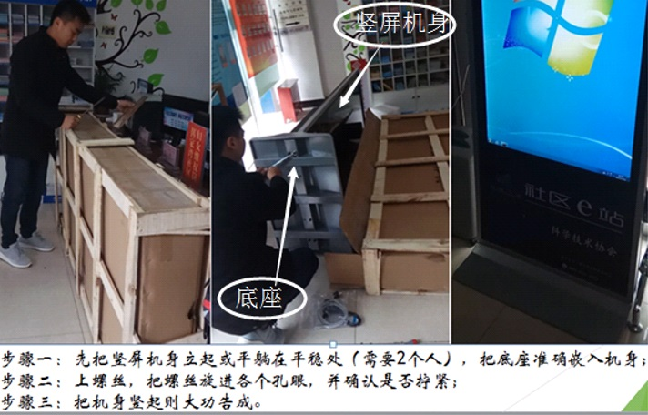</p>
<h2 id="三-、-常用竖屏设备开关机"><a href="#三-、-常用竖屏设备开关机" class="headerlink" title="三 、    常用竖屏设备开关机"></a>三 、    常用竖屏设备开关机</h2><p>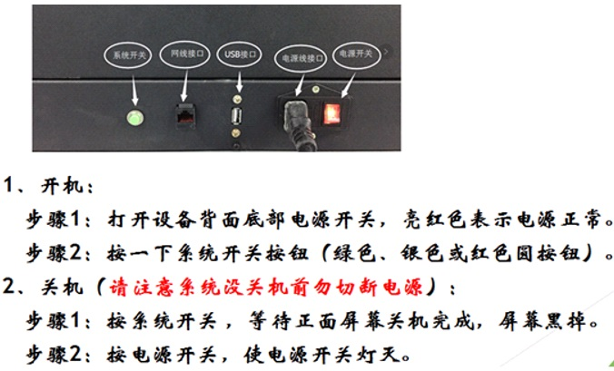</p>
<h2 id="四、-常用横屏无需安装-需要卸除两颗螺丝"><a href="#四、-常用横屏无需安装-需要卸除两颗螺丝" class="headerlink" title="四、    常用横屏无需安装 ,需要卸除两颗螺丝"></a>四、    常用横屏无需安装 ,需要卸除两颗螺丝</h2><p>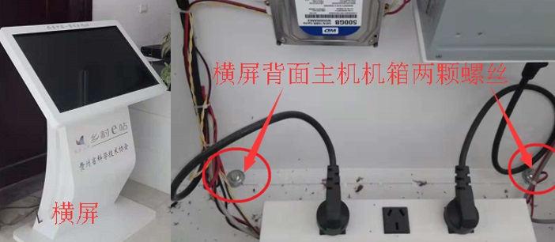</p>
<h2 id="五、-常用竖屏设备开关机"><a href="#五、-常用竖屏设备开关机" class="headerlink" title="五、    常用竖屏设备开关机"></a>五、    常用竖屏设备开关机</h2><p>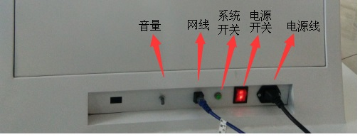</p>
<h3 id="开关机方法同上！"><a href="#开关机方法同上！" class="headerlink" title="开关机方法同上！"></a>开关机方法同上！</h3><h2 id="六、科普e站设备开机启动：等待网络连接"><a href="#六、科普e站设备开机启动：等待网络连接" class="headerlink" title="六、科普e站设备开机启动：等待网络连接"></a>六、科普e站设备开机启动：等待网络连接</h2><p>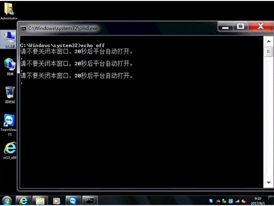</p>
<h3 id="开机后系统会自动启动科普e站，当出现以上界面时，请不要关闭此页面20秒之后系统会自动进入科普e站首页。"><a href="#开机后系统会自动启动科普e站，当出现以上界面时，请不要关闭此页面20秒之后系统会自动进入科普e站首页。" class="headerlink" title="开机后系统会自动启动科普e站，当出现以上界面时，请不要关闭此页面20秒之后系统会自动进入科普e站首页。"></a>开机后系统会自动启动科普e站，当出现以上界面时，请不要关闭此页面20秒之后系统会自动进入科普e站首页。</h3><h2 id="七、科普e站首页"><a href="#七、科普e站首页" class="headerlink" title="七、科普e站首页"></a>七、科普e站首页</h2><p></p>
<h3 id="如果网络和系统正常，系统会进入科普e站首页界面（见上图），每种科普e站都有横屏和竖屏两种类型（校园竖屏、校园横屏、社区竖屏、社区横屏、乡村竖屏、乡村横屏）"><a href="#如果网络和系统正常，系统会进入科普e站首页界面（见上图），每种科普e站都有横屏和竖屏两种类型（校园竖屏、校园横屏、社区竖屏、社区横屏、乡村竖屏、乡村横屏）" class="headerlink" title="如果网络和系统正常，系统会进入科普e站首页界面（见上图），每种科普e站都有横屏和竖屏两种类型（校园竖屏、校园横屏、社区竖屏、社区横屏、乡村竖屏、乡村横屏）"></a>如果网络和系统正常，系统会进入科普e站首页界面（见上图），每种科普e站都有横屏和竖屏两种类型（校园竖屏、校园横屏、社区竖屏、社区横屏、乡村竖屏、乡村横屏）</h3><p> 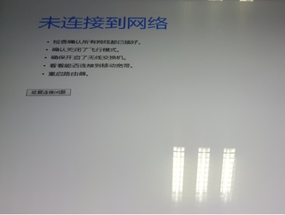</p>
<h3 id="如果网络不通，会出现未连接到网络页面（见上图-需要使用软键盘配置无线网络连接。"><a href="#如果网络不通，会出现未连接到网络页面（见上图-需要使用软键盘配置无线网络连接。" class="headerlink" title="如果网络不通，会出现未连接到网络页面（见上图),需要使用软键盘配置无线网络连接。"></a>如果网络不通，会出现未连接到网络页面（见上图),需要使用软键盘配置无线网络连接。</h3><h2 id="八、调出软键盘"><a href="#八、调出软键盘" class="headerlink" title="八、调出软键盘"></a>八、调出软键盘</h2><p>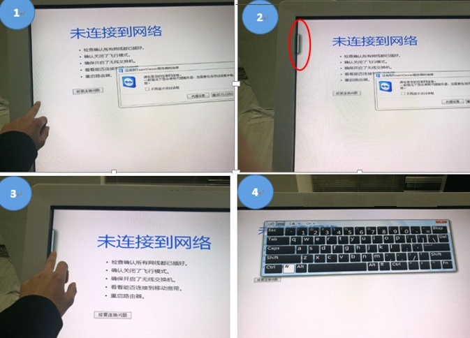 </p>
<h3 id="步骤1：-任意界面下，点击屏幕左侧边框位置（图1），可见左侧边框出现一个垂直小方块（图2红圈内）。步骤2：-手指点在垂直小方块上并向右滑动（图3），即可调出软键盘（图4）。"><a href="#步骤1：-任意界面下，点击屏幕左侧边框位置（图1），可见左侧边框出现一个垂直小方块（图2红圈内）。步骤2：-手指点在垂直小方块上并向右滑动（图3），即可调出软键盘（图4）。" class="headerlink" title="步骤1：    任意界面下，点击屏幕左侧边框位置（图1），可见左侧边框出现一个垂直小方块（图2红圈内）。步骤2：   手指点在垂直小方块上并向右滑动（图3），即可调出软键盘（图4）。"></a>步骤1：    任意界面下，点击屏幕左侧边框位置（图1），可见左侧边框出现一个垂直小方块（图2红圈内）。步骤2：   手指点在垂直小方块上并向右滑动（图3），即可调出软键盘（图4）。</h3><h2 id="九、使用软键盘"><a href="#九、使用软键盘" class="headerlink" title="九、使用软键盘"></a>九、使用软键盘</h2><p></p>
<h3 id="先点击一下左侧Windows键（左侧Ctrl和Alt之间），使之变亮，再点击一下d键（见上图），即可退出到操作系统桌面。"><a href="#先点击一下左侧Windows键（左侧Ctrl和Alt之间），使之变亮，再点击一下d键（见上图），即可退出到操作系统桌面。" class="headerlink" title="先点击一下左侧Windows键（左侧Ctrl和Alt之间），使之变亮，再点击一下d键（见上图），即可退出到操作系统桌面。"></a>先点击一下左侧Windows键（左侧Ctrl和Alt之间），使之变亮，再点击一下d键（见上图），即可退出到操作系统桌面。</h3><h2 id="十、禁止使用软键盘"><a href="#十、禁止使用软键盘" class="headerlink" title="十、禁止使用软键盘"></a>十、禁止使用软键盘</h2><p> 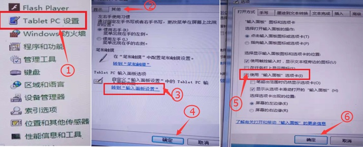</p>
<h3 id="进入e站控制面板，选择Tablet-PC设置，去掉使用输入面板选项卡（见上图）。"><a href="#进入e站控制面板，选择Tablet-PC设置，去掉使用输入面板选项卡（见上图）。" class="headerlink" title="进入e站控制面板，选择Tablet PC设置，去掉使用输入面板选项卡（见上图）。"></a>进入e站控制面板，选择Tablet PC设置，去掉使用输入面板选项卡（见上图）。</h3><h2 id="十一、连接网络"><a href="#十一、连接网络" class="headerlink" title="十一、连接网络"></a>十一、连接网络</h2><p>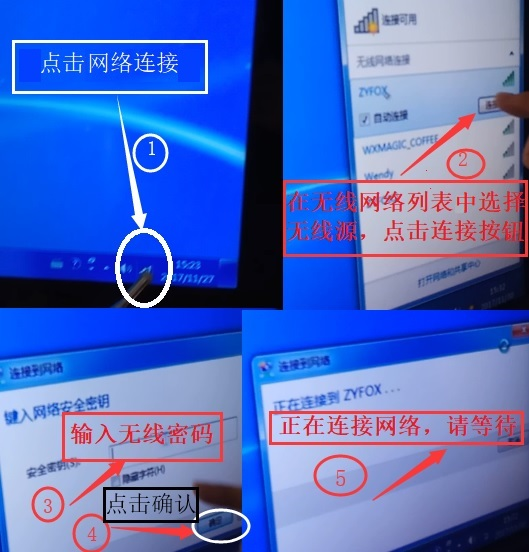</p>
<h3 id="使用有线网络：将网线插入设备网线接口即可上网。"><a href="#使用有线网络：将网线插入设备网线接口即可上网。" class="headerlink" title="使用有线网络：将网线插入设备网线接口即可上网。"></a>使用有线网络：将网线插入设备网线接口即可上网。</h3><h3 id="使用无线网络：初次使用需要配置无线网络连接（见上图）。"><a href="#使用无线网络：初次使用需要配置无线网络连接（见上图）。" class="headerlink" title="使用无线网络：初次使用需要配置无线网络连接（见上图）。"></a>使用无线网络：初次使用需要配置无线网络连接（见上图）。</h3><h3 id="用软键盘退出到系统桌面后，①点击网络连接，②弹出无线网络列表，选择无线源，再点击连接按钮。"><a href="#用软键盘退出到系统桌面后，①点击网络连接，②弹出无线网络列表，选择无线源，再点击连接按钮。" class="headerlink" title="用软键盘退出到系统桌面后，①点击网络连接，②弹出无线网络列表，选择无线源，再点击连接按钮。"></a>用软键盘退出到系统桌面后，①点击网络连接，②弹出无线网络列表，选择无线源，再点击连接按钮。</h3><h3 id="③用软键盘输入无线密码，④点击确定按钮，⑤等待网络连接。"><a href="#③用软键盘输入无线密码，④点击确定按钮，⑤等待网络连接。" class="headerlink" title="③用软键盘输入无线密码，④点击确定按钮，⑤等待网络连接。"></a>③用软键盘输入无线密码，④点击确定按钮，⑤等待网络连接。</h3><h2 id="十二、获取TeamViewer的ID"><a href="#十二、获取TeamViewer的ID" class="headerlink" title="十二、获取TeamViewer的ID"></a>十二、获取TeamViewer的ID</h2><h3 id="双击操作系统桌面上的TeamViewer图标，可打开TeamViewer（图1），当网络连接上时，左下角显示“连接准备已就绪”，表示TeamViewer已连上网，这时，“您的ID”右侧（图1红圈内）会出现一组10个数字，这就是TeamViewer的ID。"><a href="#双击操作系统桌面上的TeamViewer图标，可打开TeamViewer（图1），当网络连接上时，左下角显示“连接准备已就绪”，表示TeamViewer已连上网，这时，“您的ID”右侧（图1红圈内）会出现一组10个数字，这就是TeamViewer的ID。" class="headerlink" title="双击操作系统桌面上的TeamViewer图标，可打开TeamViewer（图1），当网络连接上时，左下角显示“连接准备已就绪”，表示TeamViewer已连上网，这时，“您的ID”右侧（图1红圈内）会出现一组10个数字，这就是TeamViewer的ID。"></a>双击操作系统桌面上的TeamViewer图标，可打开TeamViewer（图1），当网络连接上时，左下角显示“连接准备已就绪”，表示TeamViewer已连上网，这时，“您的ID”右侧（图1红圈内）会出现一组10个数字，这就是TeamViewer的ID。</h3><p>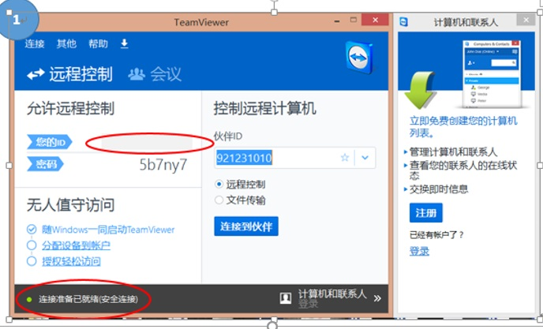</p>
<h2 id="十三、手指触摸实现鼠标单击、双击、右击"><a href="#十三、手指触摸实现鼠标单击、双击、右击" class="headerlink" title="十三、手指触摸实现鼠标单击、双击、右击"></a>十三、手指触摸实现鼠标单击、双击、右击</h2><h3 id="单击："><a href="#单击：" class="headerlink" title="单击："></a>单击：</h3><h3 id="手指轻点屏幕一次后抬起。"><a href="#手指轻点屏幕一次后抬起。" class="headerlink" title="手指轻点屏幕一次后抬起。"></a>手指轻点屏幕一次后抬起。</h3><h3 id="双击："><a href="#双击：" class="headerlink" title="双击："></a>双击：</h3><h3 id="连续快速的两次单击。"><a href="#连续快速的两次单击。" class="headerlink" title="连续快速的两次单击。"></a>连续快速的两次单击。</h3><h3 id="右击："><a href="#右击：" class="headerlink" title="右击："></a>右击：</h3><h3 id="手指轻点屏幕并按住直到出现圆圈后抬起。"><a href="#手指轻点屏幕并按住直到出现圆圈后抬起。" class="headerlink" title="手指轻点屏幕并按住直到出现圆圈后抬起。"></a>手指轻点屏幕并按住直到出现圆圈后抬起。</h3><h2 id="十四、最新竖屏定时开机"><a href="#十四、最新竖屏定时开机" class="headerlink" title="十四、最新竖屏定时开机"></a>十四、最新竖屏定时开机</h2><h4 id="1、插入USB键盘，重启系统，按Esc键或Del键或F2键，进入bios。"><a href="#1、插入USB键盘，重启系统，按Esc键或Del键或F2键，进入bios。" class="headerlink" title="1、插入USB键盘，重启系统，按Esc键或Del键或F2键，进入bios。"></a>1、插入USB键盘，重启系统，按Esc键或Del键或F2键，进入bios。</h4><h3 id="2、在BIOS设置界面上，通过键盘左右方向键，选择在“Advanced–-gt-ACPI”面板下，"><a href="#2、在BIOS设置界面上，通过键盘左右方向键，选择在“Advanced–-gt-ACPI”面板下，" class="headerlink" title="2、在BIOS设置界面上，通过键盘左右方向键，选择在“Advanced–&gt;ACPI”面板下，"></a>2、在BIOS设置界面上，通过键盘左右方向键，选择在“Advanced–&gt;ACPI”面板下，</h3><h3 id="通过上下方向键找到“Wake-system-with-Fixed-Time”，按Enter键再通过上下键选-择“Enabled”后再按Enter键。"><a href="#通过上下方向键找到“Wake-system-with-Fixed-Time”，按Enter键再通过上下键选-择“Enabled”后再按Enter键。" class="headerlink" title="通过上下方向键找到“Wake system with Fixed Time”，按Enter键再通过上下键选 择“Enabled”后再按Enter键。"></a>通过上下方向键找到“Wake system with Fixed Time”，按Enter键再通过上下键选 择“Enabled”后再按Enter键。</h3><h3 id="3、设置“Wake-up-hour”为08、设置”Wake-up-minute-”为30，表示早上8点半，"><a href="#3、设置“Wake-up-hour”为08、设置”Wake-up-minute-”为30，表示早上8点半，" class="headerlink" title="3、设置“Wake up hour”为08、设置”Wake up minute ”为30，表示早上8点半，"></a>3、设置“Wake up hour”为08、设置”Wake up minute ”为30，表示早上8点半，</h3><h3 id="如果要设置为下午3点，则设置“Wake-up-hour”为15。"><a href="#如果要设置为下午3点，则设置“Wake-up-hour”为15。" class="headerlink" title="如果要设置为下午3点，则设置“Wake up hour”为15。"></a>如果要设置为下午3点，则设置“Wake up hour”为15。</h3><p>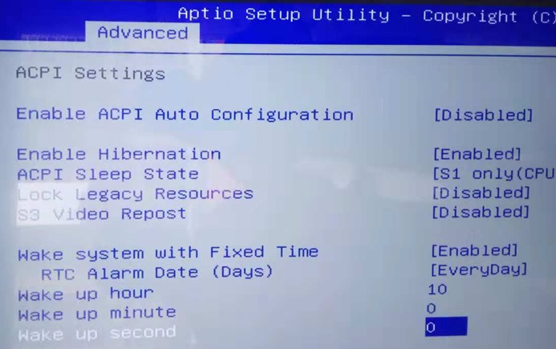</p>
<h2 id="十五、横屏定时开机"><a href="#十五、横屏定时开机" class="headerlink" title="十五、横屏定时开机"></a>十五、横屏定时开机</h2><h3 id="1、插入USB键盘，重启系统，按Esc键或Del键或F2键，进入bios。-1"><a href="#1、插入USB键盘，重启系统，按Esc键或Del键或F2键，进入bios。-1" class="headerlink" title="1、插入USB键盘，重启系统，按Esc键或Del键或F2键，进入bios。"></a>1、插入USB键盘，重启系统，按Esc键或Del键或F2键，进入bios。</h3><h3 id="2、在BIOS设置界面上，通过键盘左右方向键，选择在“高级设置（Advanced）—-gt-高级电源管理（APM）”面板下，通过上下方向键找到“Power-On-By-RTC”，按Enter键再通过上下键选择“Enabled”后再按Enter键。"><a href="#2、在BIOS设置界面上，通过键盘左右方向键，选择在“高级设置（Advanced）—-gt-高级电源管理（APM）”面板下，通过上下方向键找到“Power-On-By-RTC”，按Enter键再通过上下键选择“Enabled”后再按Enter键。" class="headerlink" title="2、在BIOS设置界面上，通过键盘左右方向键，选择在“高级设置（Advanced）—&gt;高级电源管理（APM）”面板下，通过上下方向键找到“Power On  By RTC”，按Enter键再通过上下键选择“Enabled”后再按Enter键。"></a>2、在BIOS设置界面上，通过键盘左右方向键，选择在“高级设置（Advanced）—&gt;高级电源管理（APM）”面板下，通过上下方向键找到“Power On  By RTC”，按Enter键再通过上下键选择“Enabled”后再按Enter键。</h3><h3 id="3、设置“Wake-up-hour”为08、设置”Wake-up-minute-”为30，表示早上8点半，-1"><a href="#3、设置“Wake-up-hour”为08、设置”Wake-up-minute-”为30，表示早上8点半，-1" class="headerlink" title="3、设置“Wake up hour”为08、设置”Wake up minute ”为30，表示早上8点半，"></a>3、设置“Wake up hour”为08、设置”Wake up minute ”为30，表示早上8点半，</h3><h3 id="如果要设置为下午3点，则设置“Wake-up-hour”为15。-1"><a href="#如果要设置为下午3点，则设置“Wake-up-hour”为15。-1" class="headerlink" title="如果要设置为下午3点，则设置“Wake up hour”为15。"></a>如果要设置为下午3点，则设置“Wake up hour”为15。</h3><h3 id="PS：下图绿框内点击可以改变BIOS的模式（EZ模式和Advanced模式）"><a href="#PS：下图绿框内点击可以改变BIOS的模式（EZ模式和Advanced模式）" class="headerlink" title="PS：下图绿框内点击可以改变BIOS的模式（EZ模式和Advanced模式）"></a>PS：下图绿框内点击可以改变BIOS的模式（EZ模式和Advanced模式）</h3><p> 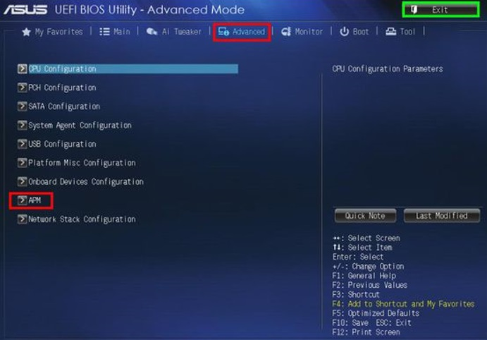</p>
<h3 id="由于不同的主板的BIOS不一样-有些主板的设置可能与上面的有一点点不同，但只要记住在电源管理中找到“WAKEUP”字样的就行了，因为这是设置定时开机的选项，全部设置好后-按F10-保存并重新启动。"><a href="#由于不同的主板的BIOS不一样-有些主板的设置可能与上面的有一点点不同，但只要记住在电源管理中找到“WAKEUP”字样的就行了，因为这是设置定时开机的选项，全部设置好后-按F10-保存并重新启动。" class="headerlink" title="由于不同的主板的BIOS不一样,有些主板的设置可能与上面的有一点点不同，但只要记住在电源管理中找到“WAKEUP”字样的就行了，因为这是设置定时开机的选项，全部设置好后,按F10,保存并重新启动。"></a>由于不同的主板的BIOS不一样,有些主板的设置可能与上面的有一点点不同，但只要记住在电源管理中找到“WAKEUP”字样的就行了，因为这是设置定时开机的选项，全部设置好后,按F10,保存并重新启动。</h3><h2 id="十六、定时关机"><a href="#十六、定时关机" class="headerlink" title="十六、定时关机"></a>十六、定时关机</h2><h3 id="在cmd-下运行schtasks-create-f-tn-定时关机-tr-“shutdown-s-t-5”-sc-daily-st-17-30"><a href="#在cmd-下运行schtasks-create-f-tn-定时关机-tr-“shutdown-s-t-5”-sc-daily-st-17-30" class="headerlink" title="在cmd 下运行schtasks /create /f /tn 定时关机 /tr “shutdown -s -t 5” /sc daily -st 17:30"></a>在cmd 下运行schtasks /create /f /tn 定时关机 /tr “shutdown -s -t 5” /sc daily -st 17:30</h3><h3 id="说明：17-30（可以修改）代表每天下午5-30分自动关机，仅需要运行一次，见下图："><a href="#说明：17-30（可以修改）代表每天下午5-30分自动关机，仅需要运行一次，见下图：" class="headerlink" title="说明：17:30（可以修改）代表每天下午5:30分自动关机，仅需要运行一次，见下图："></a>说明：17:30（可以修改）代表每天下午5:30分自动关机，仅需要运行一次，见下图：</h3><p> 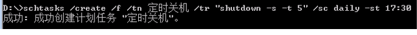</p>
<h2 id="十七、删除定时关机"><a href="#十七、删除定时关机" class="headerlink" title="十七、删除定时关机"></a>十七、删除定时关机</h2><h3 id="在cmd-下运schtasks-delete-f-tn-定时关机"><a href="#在cmd-下运schtasks-delete-f-tn-定时关机" class="headerlink" title="在cmd 下运schtasks /delete /f /tn 定时关机"></a>在cmd 下运schtasks /delete /f /tn 定时关机</h3><h3 id="说明：仅需要运行一次，见下图："><a href="#说明：仅需要运行一次，见下图：" class="headerlink" title="说明：仅需要运行一次，见下图："></a>说明：仅需要运行一次，见下图：</h3><p> </p>
<h2 id="十八、申请访问授权"><a href="#十八、申请访问授权" class="headerlink" title="十八、申请访问授权"></a>十八、申请访问授权</h2><p> 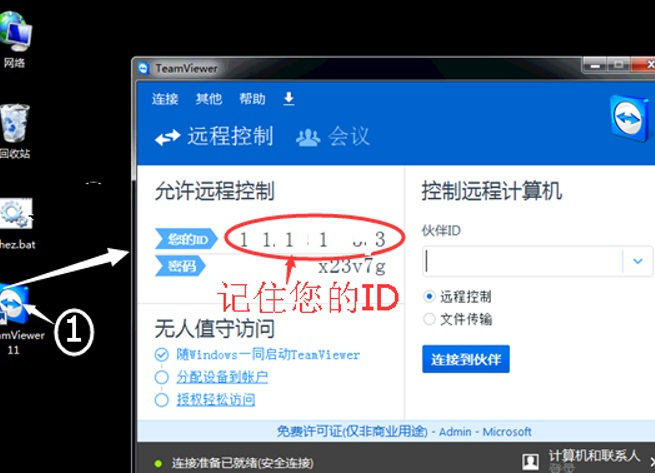 </p>
<h3 id="1、在屏上运行点双击TeamViewer记住您的ID（见上图）"><a href="#1、在屏上运行点双击TeamViewer记住您的ID（见上图）" class="headerlink" title="1、在屏上运行点双击TeamViewer记住您的ID（见上图）"></a>1、在屏上运行点双击TeamViewer记住您的ID（见上图）</h3><p> 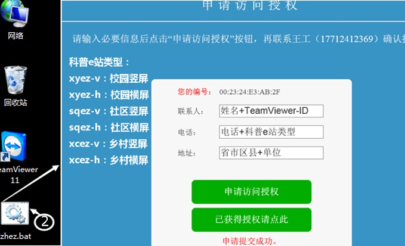 </p>
<h3 id="2在屏上双击zhez-bat-按照上图要求输入，可以用拼音代替汉字，点击申请访问授权出现申请提交成功代表完成-见上图），审核通过后，点击已获得授权，就可以进入科普e站首页了。"><a href="#2在屏上双击zhez-bat-按照上图要求输入，可以用拼音代替汉字，点击申请访问授权出现申请提交成功代表完成-见上图），审核通过后，点击已获得授权，就可以进入科普e站首页了。" class="headerlink" title="2在屏上双击zhez.bat ,按照上图要求输入，可以用拼音代替汉字，点击申请访问授权出现申请提交成功代表完成(见上图），审核通过后，点击已获得授权，就可以进入科普e站首页了。"></a>2在屏上双击zhez.bat ,按照上图要求输入，可以用拼音代替汉字，点击申请访问授权出现申请提交成功代表完成(见上图），审核通过后，点击已获得授权，就可以进入科普e站首页了。</h3><h2 id="十九、科普e站后台发布"><a href="#十九、科普e站后台发布" class="headerlink" title="十九、科普e站后台发布"></a>十九、科普e站后台发布</h2><h3 id="通过pc端电脑的浏览器访问科普e站后台网址-http-kpzg-agri114-cn-kpzg-xyez-admin，"><a href="#通过pc端电脑的浏览器访问科普e站后台网址-http-kpzg-agri114-cn-kpzg-xyez-admin，" class="headerlink" title="通过pc端电脑的浏览器访问科普e站后台网址:http://kpzg.agri114.cn/kpzg_xyez/admin，"></a>通过pc端电脑的浏览器访问科普e站后台网址:<a href="http://kpzg.agri114.cn/kpzg_xyez/admin，" target="_blank" rel="noopener">http://kpzg.agri114.cn/kpzg_xyez/admin，</a></h3><h3 id="输入用户名密码登录后，可以发布站点独有栏目及其内容、通知公告等。获取用户名密码请在科普e站QQ交流群中-贵州-623955071、云南官渡-686487569、云南西山-955759733、新疆-492027908、山西-152503020、陕西-874608827、内蒙-210532495-私聊-南京绿色科技-吴经理。"><a href="#输入用户名密码登录后，可以发布站点独有栏目及其内容、通知公告等。获取用户名密码请在科普e站QQ交流群中-贵州-623955071、云南官渡-686487569、云南西山-955759733、新疆-492027908、山西-152503020、陕西-874608827、内蒙-210532495-私聊-南京绿色科技-吴经理。" class="headerlink" title="输入用户名密码登录后，可以发布站点独有栏目及其内容、通知公告等。获取用户名密码请在科普e站QQ交流群中(贵州:623955071、云南官渡:686487569、云南西山:955759733、新疆:492027908、山西:152503020、陕西:874608827、内蒙:210532495)私聊@南京绿色科技-吴经理。"></a>输入用户名密码登录后，可以发布站点独有栏目及其内容、通知公告等。获取用户名密码请在科普e站QQ交流群中(贵州:623955071、云南官渡:686487569、云南西山:955759733、新疆:492027908、山西:152503020、陕西:874608827、内蒙:210532495)私聊@南京绿色科技-吴经理。</h3><blockquote>
<p>南京绿色科技研究院有限公司服务电话17712412369</p>
</blockquote>
<hr>
<blockquote>
<p><a href="https://linuxpy.github.io/github.io/2019/01/12/%E7%A7%91%E6%99%AEe%E7%AB%99%E4%BB%8B%E7%BB%8D%E7%9B%AE%E5%BD%95/" target="_blank" rel="noopener">返回首页</a></p>
</blockquote>

      
    </div>
    <footer class="article-footer">
      <a data-url="https://github.com/linuxpy/github.io/2019/01/08/科普e站设备安装使用操作说明/" data-id="cjr28gv5300070wnqm2zoysg8" class="article-share-link">Share</a>
      
      
    </footer>
  </div>
  
    
<nav id="article-nav">
  
    <a href="/github.io/2019/01/09/科普e站设备的使用维护及注意事项/" id="article-nav-newer" class="article-nav-link-wrap">
      <strong class="article-nav-caption">Newer</strong>
      <div class="article-nav-title">
        
          科普e站设备的使用维护及注意事项
        
      </div>
    </a>
  
  
    <a href="/github.io/2019/01/08/科普e站概述和分类介绍/" id="article-nav-older" class="article-nav-link-wrap">
      <strong class="article-nav-caption">Older</strong>
      <div class="article-nav-title">科普e站概述和分类介绍</div>
    </a>
  
</nav>

  
</article>

</section>
        
          <aside id="sidebar">
  
    

  
    

  
    
  
    
  <div class="widget-wrap">
    <h3 class="widget-title">Archives</h3>
    <div class="widget">
      <ul class="archive-list"><li class="archive-list-item"><a class="archive-list-link" href="/github.io/archives/2019/01/">January 2019</a></li></ul>
    </div>
  </div>


  
    
  <div class="widget-wrap">
    <h3 class="widget-title">Recent Posts</h3>
    <div class="widget">
      <ul>
        
          <li>
            <a href="/github.io/2019/01/16/mydoc/">文档</a>
          </li>
        
          <li>
            <a href="/github.io/2019/01/12/科普e站设备安装使用操作说明/">(no title)</a>
          </li>
        
          <li>
            <a href="/github.io/2019/01/12/hello-world/">Hello World</a>
          </li>
        
          <li>
            <a href="/github.io/2019/01/12/科普e站介绍目录/">科普e站介绍目录</a>
          </li>
        
          <li>
            <a href="/github.io/2019/01/12/科普e站电脑版（班班通）/">科普e站电脑版（班班通）安装简要说明</a>
          </li>
        
      </ul>
    </div>
  </div>

  
</aside>
        
      </div>
      <footer id="footer">
  
  <div class="outer">
    <div id="footer-info" class="inner">
      &copy; 2019 John Doe<br>
      Powered by <a href="http://hexo.io/" target="_blank">Hexo</a>
    </div>
  </div>
</footer>
    </div>
    <nav id="mobile-nav">
  
    <a href="/github.io/" class="mobile-nav-link">Home</a>
  
    <a href="/github.io/archives" class="mobile-nav-link">Archives</a>
  
</nav>
    

<script src="//ajax.googleapis.com/ajax/libs/jquery/2.0.3/jquery.min.js"></script>


  <link rel="stylesheet" href="/github.io/fancybox/jquery.fancybox.css">
  <script src="/github.io/fancybox/jquery.fancybox.pack.js"></script>


<script src="/github.io/js/script.js"></script>


  </div>
</body>
</html>